Minecraft 1.20
Release date: June 07, 2023
New Block
Chiseled bookshelf
- It is a new type of bookshelf that can store both regular and enchanted books. This block does not have an interface, and you can take books or put them in this block by clicking on the right mouse button. The chiseled bookshelf can store up to six books.
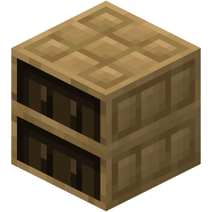Bamboo Planks
- Bamboo planks can be used as a building block or to create fences, slabs, doors, pressure plates, and other blocks. They are made from bamboo. They can also be used to get a new bamboo mosaic block.
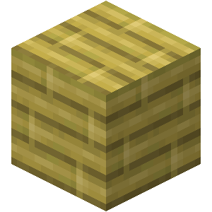Bamboo Mosaic
- It is a building block that can be used in construction, as well as to create stairs and slabs.
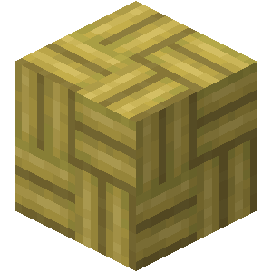Hanging Sign
- You can leave inscriptions on this block and use it, for example, as a street nameplate. The hanging sign is crafted with logs and chains. The appearance of the hanging sign depends on the logs used in crafting.
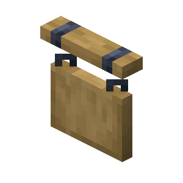Ancient Plant
- It is a new plant that can be obtained by planting ancient seeds.
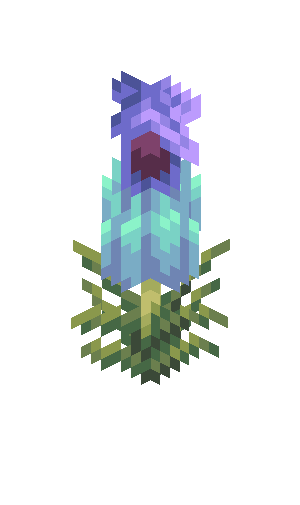Sniffer Egg
It is a fairly valuable block you can find in Ocean Ruins, more specifically from chests there. You can use this egg to hatch a new creature a sniffer.
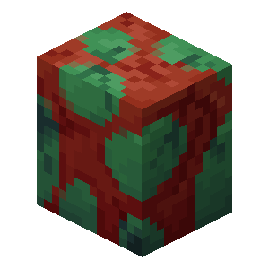New Items
Ancient Seeds
- You cannot find them on your own, only with the help of a sniffer. This creature digs up the ground to bring you ancient seeds. By planting such a seed, you can get a new plant.
New Mobs
Sniffer
- This mob enters the game since it is the winner of Minecraft Live Mob Vote 2022. The sniffer hatches from sniffer eggs. It will dig up the ground in search of ancient seeds so that you can plant them and grow new types of plants

Camel
- It is a new creature that you can ride to travel the world. You can get a baby camel by feeding adult camels with a cactus. It moves faster than any other creature along rivers and ravines. Unlike a horse, a camel can carry up to two players.
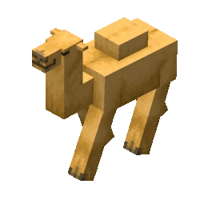New mob head
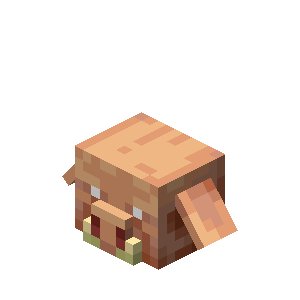MORE IMAGERS
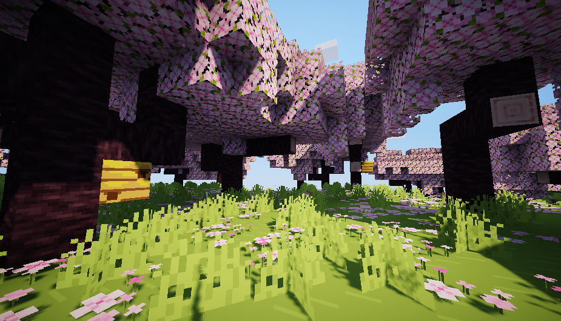 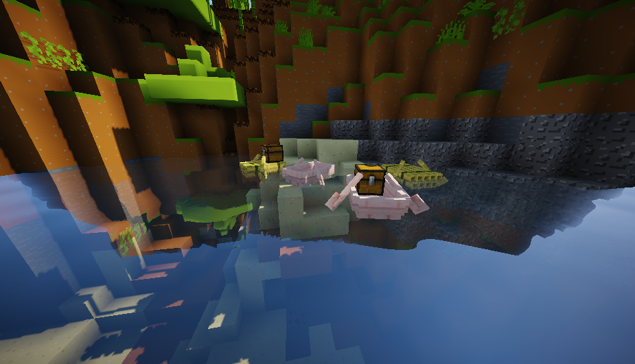 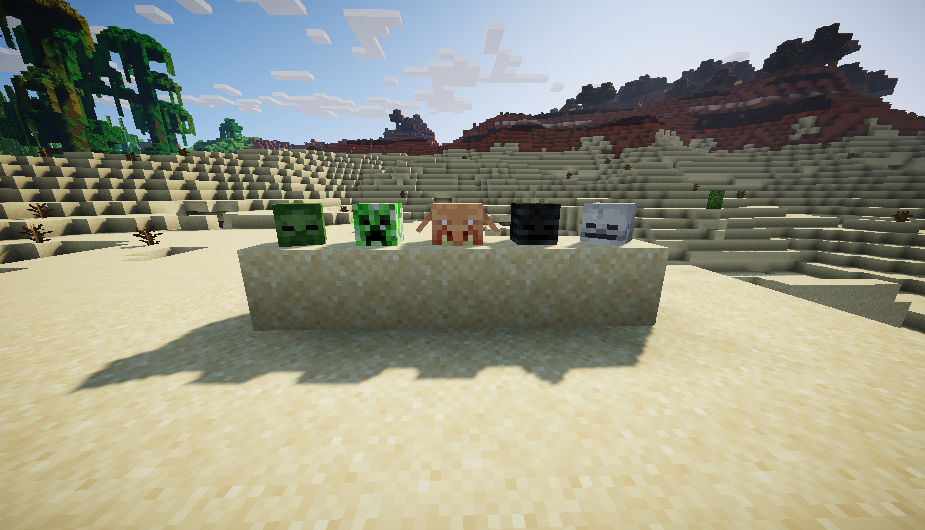 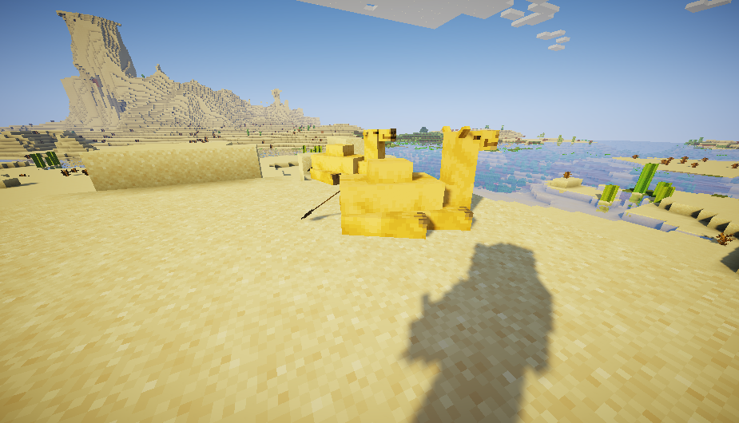 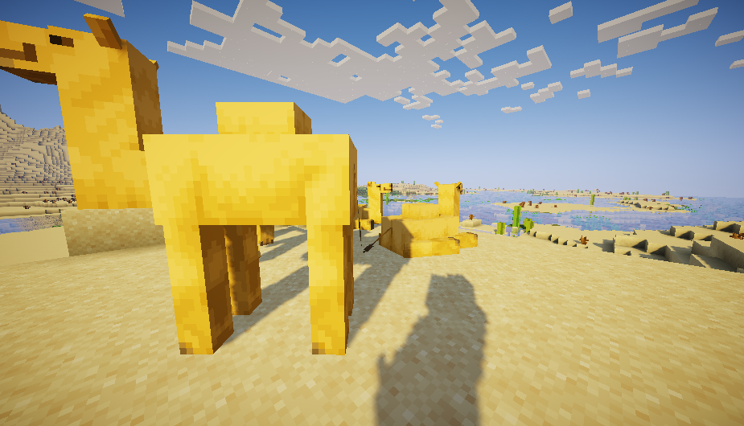 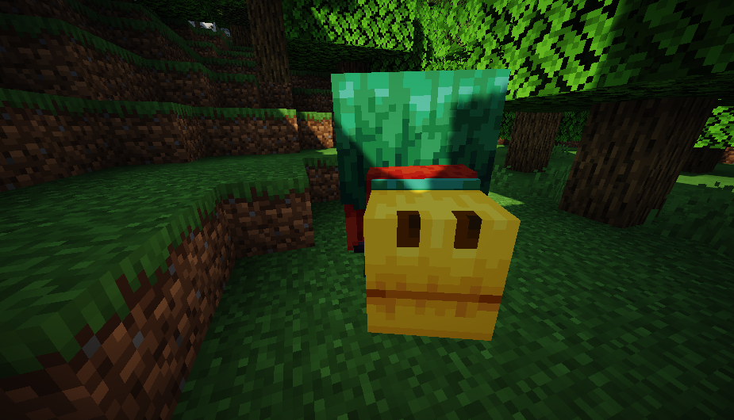Use full ebsite for minecraft 1.19 1.20
Minecraft Wiki
Minetrim.com
Chunk base